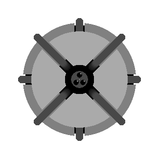
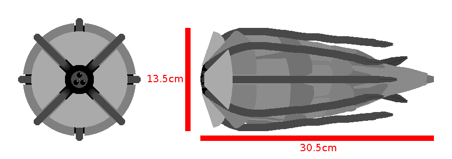

| civic chip requirements | 1.100e+12 bits, 4.700e+16 bits/s | |||||
|---|---|---|---|---|---|
| number needed | power draw | bare substrate volume | processing used | memory used | |
| Civic-1 chip | 5 | 47.00W | 500.000mm3 ≈ (7.937mm)3 | 94.00% | 0.22% |
| Civic-2 chip | 1 | 9.400W | 100.000mm3 ≈ (4.642mm)3 | 94.00% | 0.11% |
| Civic-3 chip | 1 | 58.75mW | 100.000mm3 ≈ (4.642mm)3 | 0.59% | 0.11% |
| Civic-4 chip | 1 | 1.504mW | 100.000mm3 ≈ (4.642mm)3 | 0.02% | 0.18% |
| Civic-5 chip | 376 | 3.760kW | 0.0000376000m3 ≈ (33.50mm)3 | 100.00% | 0.000012% |
| civic chip requirements | 1.760e+13 bits, 1.209e+18 bits/s | |||||
|---|---|---|---|---|---|
| number needed | power draw | bare substrate volume | processing used | memory used | |
| Civic-1 chip | 121 | 1.209kW | 12100.0mm3 ≈ (22.96mm)3 | 99.92% | 0.15% |
| Civic-2 chip | 25 | 241.8W | 2500.00mm3 ≈ (13.57mm)3 | 96.72% | 0.07% |
| Civic-3 chip | 1 | 1.511W | 100.000mm3 ≈ (4.642mm)3 | 15.11% | 1.76% |
| Civic-4 chip | 1 | 38.69mW | 100.000mm3 ≈ (4.642mm)3 | 0.39% | 2.93% |
| Civic-5 chip | 9 672 | 96.72kW | 0.000967200m3 ≈ (98.89mm)3 | 100.00% | 0.000008% |